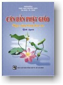

|
BuddhaSasana Home Page |
Vietnamese, with Unicode Times font |
|  |
C ăn Bản Phật GiáoBình Anson NXB Tổng Hợp TP HCM |
|
-05- Rằm Tháng Sáu: Bình Anson ---*--- C ó ba dịp lễ lớn trong truyền thống Phật giáo Nguyên thủy. Đó là ngày lễ Magha Puja, Vesakha Puja, và Asalha Puja. "Puja" nghĩa là tôn kính, quý kính, còn có nghĩa là sự dâng cúng, cúng dường. Ở đây, Puja còn có nghĩa là ngày lễ lớn. "Magha, Vesakha, Asalha" là tên các tháng trong lịch của Ấn độ. So với âm lịch Việt Nam, "Magha" tương ứng với tháng Giêng, "Vesakha" tương ứng với tháng Tư, và "Asalha" tương ứng với tháng Sáu."Magha Puja" là ngày lễ Rằm tháng Giêng, kỷ niệm ngày Đức Phật thuyết kệ "Ovada-Patimokkha", là căn bản cho các giới luật sau này. "Vesakha Puja" là ngày lễ Rằm tháng Tư, tức là ngày Tam Hợp hay Phật Đản. "Asalha Puja" là ngày lễ Rằm tháng Sáu, kỷ niệm ngày Đức Phật giảng kinh Chuyển Pháp Luân, và sau đó, chư Tăng Nam tông bắt đầu mùa An cư Kiết hạ. Ngoài ra, truyền thống Nam tông còn có các ngày lễ khác như ngày Tự Tứ (rằm tháng Chín) -- kết thúc mùa An cư Kiết hạ, và mùa lễ Dâng Y Kathina trong một tháng, từ ngày 16 tháng Chín đến ngày rằm tháng Mười âm lịch. * 1. Chuyển Pháp Luân Ngài Bồ tát Sĩ-đạt-ta rời gia đình, tìm đạo giải thoát năm 29 tuổi, và thành đạo năm 35 tuổi, vào đêm trăng Rằm tháng Tư. Sau khi Ngài giác ngộ, có vị Phạm thiên Sahampati cung thỉnh Ngài vì lòng từ bi thuyết pháp độ đời. Đức Phật quan sát thế gian và nhận lời thuyết pháp. Ðầu tiên, Ngài nghĩ đến đạo sĩ Alàra Kàlàma và đạo sĩ Uddaka Ràmaputta, là hai vị thầy dạy đạo cho ngài khi còn là Bồ-tát tầm sư học đạo, nhưng Chư Thiên báo là hai vị này đã qua đời. Tiếp đến, Ngài nghĩ đến năm người bạn là: Kondanna (Kiều Trần Như), Bhaddiya, Vappa, Mahànàma và Assaji, mà lúc trước đã cùng tu khổ hạnh với ngài, và hiện giờ họ đang ở vườn Lộc Uyển, gần thành Ba La Nại. Từ Bồ đề đạo tràng, nơi Ngài giác ngộ, Đức Phật đi đến vườn Lộc Uyển, một cuộc hành trình khoảng 210 km, mất khoảng 2 tháng, và đến nơi đó vào đúng ngày Rằm tháng Sáu. Thoạt tiên, khi thấy Ngài, anh em Kiều Trần Như quyết định không chào hỏi, cũng không đứng lên đảnh lễ Ngài, bởi vì họ cho rằng lúc trước, Ngài đã từ bỏ lối tu khổ hạnh, không còn là một bậc chân tu nữa. Tuy nhiên, khi Ngài tiến đến gần, chư vị đã bị chinh phục trước vẻ cao quý của một bậc giải thoát, khiến họ đối xử với Ngài vô cùng kính cẩn. Chư vị cầm lấy bình bát và thượng y của ngài, sửa soạn chỗ ngồi cho Ngài, rửa chân Ngài và gọi Ngài là "Hiền giả" (Àvuso) theo thói quen. Song Đức Phật bác bỏ cách xưng hô này, và nói: "Này chư vị, đừng gọi Như Lai (Tathàgata) là "Hiền giả" như một trong các vị. Như Lai là bậc A-la-hán, Chánh Ðẳng Giác" -- (Đại Phẩm) Lời tuyên bố đã khám phá con đường đưa đến Bất Tử tức con đường Giải thoát, đã giác ngộ và chứng đắc Chân Lý của Ngài được năm người bạn đồng tu cũ đáp lại với vẻ hoài nghi. Chư vị hỏi: Làm thế nào một người đã từ bỏ khổ hạnh để chọn đời sống sung túc, lại có thể chứng đắc Chân Lý? Ðức Phật giải thích rằng Ngài chẳng hề tham đắm đời sống sung túc. Để làm sáng tỏ mọi việc, Ngài thuyết giảng bài kinh Chuyển Pháp Luân, khởi đầu công trình hoằng pháp của Ngài. Bài kinh trình bày Pháp Giải Thoát là Trung Ðạo, và nêu lên Bốn Chân Lý Cao Quý (Tứ Diệu Đế) - như đã ghi lại trong Luật Tạng và trong Tương Ưng Bộ: "Có hai cực đoan, này chư vị, mà người xuất gia nên tránh. Hai cực đoan đó là gì? Đắm mình vào dục lạc, thấp kém, tầm thường, hạ liệt, không xứng đáng bậc Thánh, không ích lợi, là một cực đoan. Cực đoan kia là chuyên tâm khổ hạnh ép xác, gây khổ đau, không xứng đáng bậc Thánh, và cũng không ích lợi. Này chư vị, Như Lai đã tránh xa hai cực đoan này, và tìm ra Trung Ðạo, chính là con đường khiến cho Ta thấy và biết rõ, con đường đưa đến an tịnh, thắng trí, giác ngộ, Niết-bàn." Ngài giảng tiếp: "Đây là Chân lý về Khổ: Sanh, già, bệnh, chết là khổ; sầu, bi, ưu, não là khổ; thân cận những gì ta không thích là khổ; xa lìa những gì ta thích là khổ; cầu không được là khổ; tóm lại, ngũ thủ uẩn là khổ. Đâ y là Chân lý về Nguồn gốc của Khổ: Ðó chính là khát ái đưa đến tái sanh, câu hữu với hỷ và tham, tìm thấy lạc thú chỗ này chỗ kia: đó là Dục ái, Hữu ái và Phi hữu ái.Đâ y là Chân lý về Khổ Diệt: Đó chính là sự đoạn trừ, diệt tận hoàn toàn khát ái đó, quăng bỏ nó, chấm dứt nó, xả ly nó, không chấp thủ nó.Đâ y là Chân lý về Con Ðường Diệt Khổ: Ðó là Thánh Ðạo Tám Ngành, tức là: Chánh Kiến, Chánh Tư duy, Chánh Ngữ, Chánh Nghiệp, Chánh Mạng, Chánh Tinh tấn, Chánh Niệm, và Chánh Ðịnh." -- (Đại Phẩm, Tạng Luật; Tương Ưng Bộ)Năm vị tôn giả hết sức chú tâm lắng nghe lời ngài. Khi Ngài thuyết giảng, tôn giả Kondanna quán triệt: "Những gì có sinh khởi đều phải chịu qui luật hoại diệt", và đắc quả Dự lưu. Sau đó, tôn giả liền xin Đức Phật nhận làm đệ tử. Đức Phật nói: "Ðến đây, này Tỳ-khưu, Giáo Pháp đã được khéo giảng, hãy sống đời Phạm hạnh để đoạn tận khổ đau" và nhận tôn giả làm một Tỳ-khưu. Như vậy, tôn giả Kondanna là vị Tỳ-khưu đầu tiên trong lịch sử Phật giáo, đánh dấu khởi điểm sự thành lập Tăng đoàn, tồn tại cho đến ngày nay. Chẳng bao lâu, lời dạy của Đức Phật đã giúp cho tôn giả Vappa và Bhaddiya hiểu Pháp và hai vị cũng được nhận làm Tỳ-khưu. Trong lúc các ngài Kondanna, Vappa và Bhaddiya đi khất thực để cung cấp thức ăn cho cả nhóm, Đức Phật thuyết giảng riêng cho tôn giả Mahànàma và Assaji. Sau đó, hai vị nầy đắc quả bậc Nhập lưu, và xin làm đệ tử. Như vậy, lúc đó có sáu Tỳ-khưu trên thế gian - Đức Phật và năm vị đệ tử của Ngài. Vài ngày sau, Đức Phật dạy bài pháp về Vô Ngã - kinh Vô Ngã Tướng. Khi năm Tỳ-khưu nghe lời thuyết giảng này của Đức Phật, tâm của chư vị thoát khỏi mọi lậu hoặc, và trở thành các bậc Thánh A-la-hán giải thoát. * 2. An cư Kiết hạ Một ngày sau lễ Rằm tháng Sáu, chư Tăng trong truyền thống Phật giáo Nam tông bắt đầu mùa An cư Kiết hạ. Trong Chương "Vào Mùa Mưa", Đại Phẩm, Luật Tạng, có ghi: Đứ c Thế Tôn ngự tại thành Vương Xá, Trúc Lâm. Lúc bấy giờ, việc an cư mùa mưa chưa được Đức Thế Tôn quy định cho các Tỳ-khưu. Các vị Tỳ-khưu đi du hành trong mùa lạnh, trong mùa nóng, và cả trong mùa mưa nữa. Dân chúng phàn nàn, phê phán, chê bai rằng:-"Vì sao các sa-môn Thích Tử lại đi du hành trong mùa lạnh, trong mùa nóng, và cả trong mùa mưa nữa? Ngay cả các du sĩ ngoại đạo, dù có giáo lý được thuyết tồi tệ, vẫn sống cố định một chỗ trong mùa mưa, ngay cả những con chim sau khi làm tổ trên các ngọn cây cũng sống cố định trong mùa mưa. Còn các sa-môn Thích Tử thì lại đi du hành trong mùa lạnh, trong mùa nóng, và cả trong mùa mưa nữa. Các vị ấy đang dẫm đạp lên các loại cỏ xanh, đang hãm hại mạng sống của loài chỉ có một giác quan, và đang gây nên việc giết hại hàng loạt chúng sanh nhỏ nhoi". Các Tỳ-khưu nghe được những người ấy phàn nàn, phê phán, chê bai. Vì thế, các vị ấy trình sự việc lên Đức Thế Tôn. Đức Phật nhân sự việc này mà bảo các Tỳ-khưu rằng: -"Này các Tỳ-khưu, ta cho phép an cư trong mùa mưa. Đây là hai thời điểm vào mùa an cư: thời điểm trước và thời điểm sau. Thời điểm trước là ngày kế của ngày trăng tròn tháng Āsālha, thời điểm sau là vào ngày sau trăng tròn tháng sau." Tính theo âm lịch của Việt Nam nếu không có tháng nhuần thì thời điểm trước là ngày 16 tháng 6, thời điểm sau là ngày 16 tháng 7. Ngài dạy tiếp: -"Này các Tỳ-khưu, trong mùa an cư ba tháng thì không nên ra đi du hành. Vị nào ra đi thì phạm tội tác ác (dukkata)." Tuy nhiên, nếu có chuyện cần kíp và được thỉnh mời, vị Tỳ-khưu được phép rời trú xứ trong thời hạn không quá 7 ngày. Đức Phật dạy: -"Này các Tỳ-khưu, ta cho phép đi khi được thỉnh mời với công việc có thể giải quyết trong bảy ngày; và không nên đi, nếu không được thỉnh mời." Suốt thời kỳ gió mùa ở miền bắc Ấn Độ, từ tháng Sáu đến tháng Mười, chư Tăng sống một nơi cố định trong 3 tháng an cư. Chư vị có thể lựa chọn cách tự mình xây một am thất trú mưa, hay ở trong một tinh xá sẵn có. Mùa an cư bắt đầu từ ngày rằm tháng Àsàlha (rằm tháng Sáu). Tuy nhiên, Đức Phật cũng cho phép bất kỳ một Tỳ-khưu nào khởi sự chậm hơn một tháng vào ngày rằm tháng Bảy - gọi là "hậu An cư". Việc đình chỉ du hành chấm dứt vào ngày rằm tháng Chín (Àssina). Nếu vị nào khởi sự chậm hơn một tháng, thì chấm dứt vào tháng Mười (Kattikà). Chư Tăng tổ chức lễ sám hối Bố-tát (Uposatha) đặc biệt, tức là lễ Tự Tứ (Pavàranà), kết thúc mùa an cư. Sau đó, các Tỳ-khưu công bố hoàn tất các phận sự trong Giới Luật, rời nơi an cư, và bắt đầu du hành truyền đạo. Tập tục an cư mùa mưa không chỉ có lý do cổ truyền, mà còn có lý do thực tiễn nữa. Khi trời đổ mưa ào ạt và các con sông chảy tràn bờ, khi đường xá chìm trong bùn lầy, và những mảnh đất không ngập nước làm thành nơi trú ẩn cho rắn rết, bọ cạp, thì việc du hành và cắm lều ngoài trời hầu như không thể thực hiện được. Hơn nữa, khí ẩm bốc hơi trong thời gió mùa tạo ra những tai hại khác cho sức khỏe; và nếu một Tỳ-khưu bị bệnh, thì dễ săn sóc vị ấy tại một tinh xá hơn là lúc di chuyển. Tục lệ an cư mùa mưa còn có lợi cho Tăng chúng theo nhiều cách. Trong suốt những tháng du hành theo ý riêng của mỗi người, có thể là một vài Tỳ-khưu nào đó trở thành buông lung trong nếp sinh hoạt. Trong mùa an cư, các Tỳ-khưu chung sống sinh hoạt với nhau, nên phải chú tâm đến quy luật xử thế và theo đúng nguyên tắc. Mùa an cư còn tăng cường mối tình cảm trong Tăng đoàn. Cuộc sống chung ở một nơi và cùng học tập lời dạy của bậc Ðạo Sư, sự trao đổi kinh nghiệm và kiến thức đưa đến sự thiết lập các mối quan hệ thân hữu có giá trị giáo dục, đã được Đức Phật đánh giá cao. Ngài nói: "Quả thật tất cả đời sống đồng Phạm hạnh của Tăng chúng cốt yếu ở tình thân hữu giữa những người ưa thích điều thiện, ở tình đồng đạo, đồng chí hướng. Một Tỳ-khưu làm bạn với điều thiện, là người bạn giao du, người đồng chí hướng, có triển vọng tu tập và làm sung mãn Bát Chánh Ðạo, để giải thoát cho đồng bạn cũng như bản thân vị ấy". Có lần Đức Phật thấy một Tỳ-khưu bị bệnh, nằm bơ vơ không ai chăm sóc, Ngài và Trưởng lão Ànanda cùng đến săn sóc vị ấy. Rồi Ngài gọi Tăng chúng đến và dạy: "Này các Tỳ-khưu, chư vị không có cha mẹ chăm sóc mình. Vậy, nếu chư vị không chăm sóc nhau, thì ai sẽ làm việc ấy? Này các Tỳ-khưu, bất cứ ai trong chư vị muốn chăm sóc ta, thì vị ấy hãy chăm sóc người bạn đồng Phạm hạnh". Việc an cư mùa mưa cũng quan trọng trong việc học tập của chư Tăng thời đó. Chư vị tụng đọc lại các bài kinh của Đức Phật và học hỏi những lời dạy mới của Ngài. Việc học tập nghe kinh không chỉ giới hạn vào mùa an cư, nhưng được thuận lợi hơn nhờ sự chung sống suốt ba tháng của một hội chúng Tỳ-khưu đông đảo tại cùng một địa điểm. Có lẽ Giáo Pháp sẽ không được truyền tụng đến thời đại chúng ta trong hình thức chính xác như ngày nay, nếu Tăng chúng thời xưa không có cơ hội duyệt lại toàn thể lời giáo huấn của Đức Phật trong các mùa an cư kiết hạ hằng năm ấy. Perth, tháng 7-2004 -ooOoo- Ðầu trang | 01 | 02 | 03 | 04 | 05 | 06 | 07 | 08 | 09 | 10 | Mục lục |
[Trở
về trang Thư Mục]
last updated: 02-02-2005